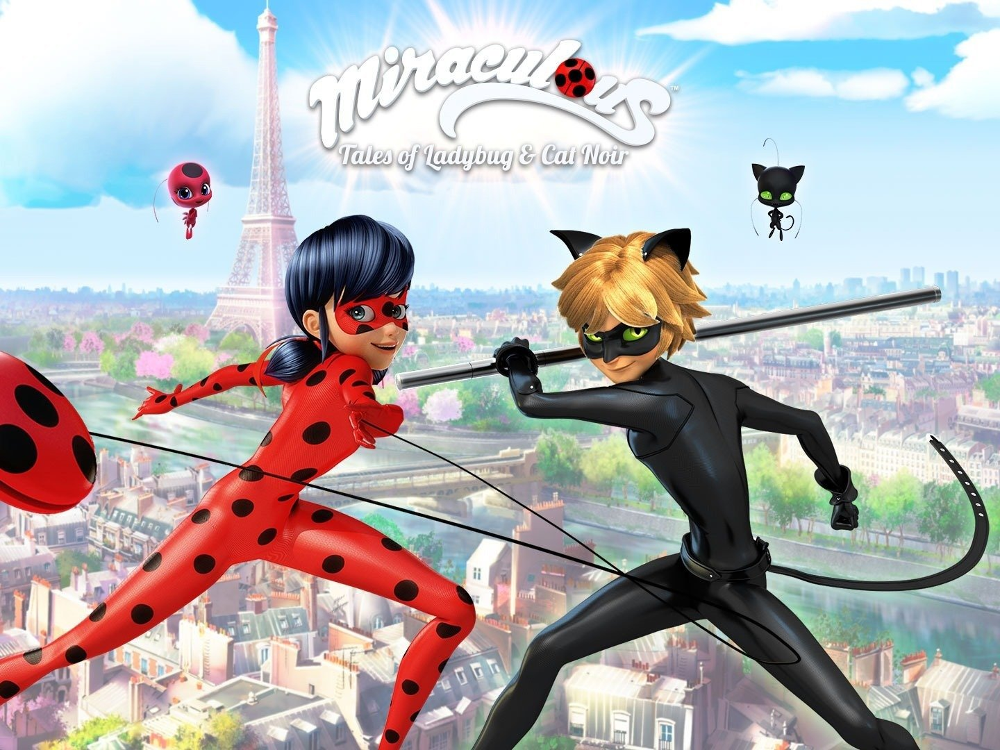

Introduction
Miraculous: Tales of Ladybug & Cat Noir (French: Miraculous, les aventures de Ladybug et Chat Noir) is a French CGI action/adventure animated series produced by ZAG Entertainment and Method Animation, in co-production with Toei Animation, SAMG Animation, and De Agostini Editore, as well as several international companies. It features two Parisian teenagers, Marinette Dupain-Cheng and Adrien Agreste, who transform into the superheroes Ladybug and Cat Noir, respectively, to protect the city from supervillains.
Before its debut in France on 17 October 2015, on TF1/TFX's TFOU block, the series was first shown in South Korea on 1 September 2015, on EBS1. Internationally, it is mainly broadcast on Disney-owned channels or on Disney+, with exceptions
in some countries.
The series focuses on two Parisian teenagers, Marinette Dupain-Cheng and Adrien Agreste, who transform into the superheroes Ladybug and Cat Noir, respectively, to protect the city from supervillains created by their main antagonist, Hawk Moth.
